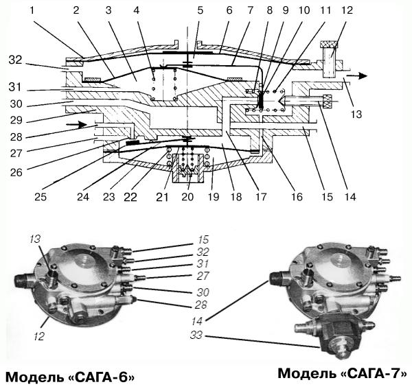
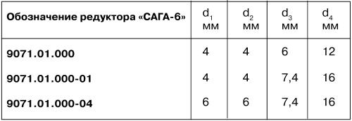
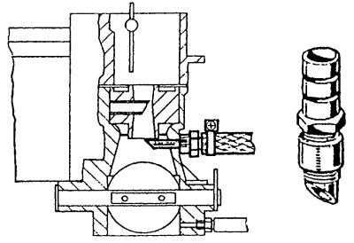
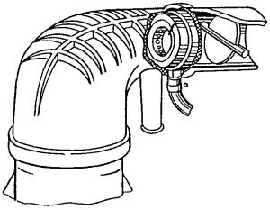
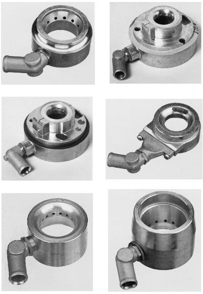

Редукторы-испарители «САГА»
Двухступенчатый редуктор модели «САГА-6» обеспечивает работу как впрыскового, так и карбюраторного двигателя внутреннего сгорания на газе сжиженном нефтяном (ГСН) и компримированном природном газе (КПГ). Такая его универсальность является существенным достоинством по сравнению с редукторами других фирм, ориентированными в основном для работы на каком-то одном виде газового топлива.
На базе редуктора «САГА-6» для работы на компримированном природном газе создана модель «САГА-7».
В конструкцию редуктора-испарителя добавлен самостоятельный узел – редуктор высокого давления (РВД), непосредственно присоединенный к корпусу двухступенчатого редуктора низкого давления (РНД) и сообщающийся с его входом. Совмещение двухступенчатого РНД с РВД позволяет поддерживать на входе в РНД рабочее давление компримированного природного газа в пределах 0,5–1,2 МПа при максимальном входном давлении в РВД 20 МПа. Далее газобаллонная установка работает по традиционной схеме, также как для сжиженных газов. РВД обогревается посредством контактной теплопередачи от РНД. В корпусе РВД предусмотрен штуцер для подключения дренажного шланга отвода газа в атмосферу в случае его утечки в каком-либо соединении системы.
Внешний вид и рабочая схема унифицированных редукторов «САГА» приведены на рис. 16.

Рис. 16. Редукторы-испарители «САГА-6» и «САГА-7»: 1 – крышка второй ступени; 2 – диафрагма разгрузочного устройства; 3 – полость разгрузочного устройства; 4, 8, 11, 22 – пружины; 5 – полость второй ступени; 6 – диафрагма второй ступени; 7, 24 – рычаги; 9, 25 – клапаны; 10 – седло клапана второй ступени диаметром проходного сечения d3; 12 – дозатор; 13 – канал выхода газа диаметром проходного сечения d4; 14 – регулировочный винт холостого хода; 15, 30 – каналы соответственно подвода и отвода теплоносителя; 16 – канал обратной связи; 17 – канал, соединяющий полости высокого и низкого давления; 18 – полость первой ступени; 19 – подпружиненная полость первой ступени; 20 – винт регулировки давления первой ступени; 21 – диафрагма первой ступени; 23 – крышка первой ступени; 26 – седло клапана первой ступени с диаметром проходного сечения d2; 27 – канал слива конденсата из полости первой ступени; 28 – канал подвода газа с диаметром проходного сечения d1; 29 – корпус редуктора; 31 – канал для подсоединения к впускному трубопроводу двигателя или задроссельному пространству карбюратора; 32 – канал слива конденсата из полости второй ступени; 33 – редуктор высокого давления.

Для работы на газовом топливе переключатель вида топлива на панели приборов устанавливают в положение «Газ». При включенном зажигании газ под давлением 0,15–0,5 МПа поступает в полость (18) первой ступени редуктора-испарителя или непосредственно из баллона (при работе на ГСН), или из теплообменника (при работе ан КПГ), или из редуктора высокого давления (33) (при работе на сжиженном природном газе).
Во время пуска двигателя стартером в его впускном трубопроводе создается разрежение, которое через шланг передается в полость (3) разгрузочного устройства. Под действием перепала давлений возникающая на диафрагме (2) разгрузочного устройства сила сжимает пружину (4), освобождая рычаг (7) клапана (9) второй ступени.
Разрежение воздействует на диафрагму (6) второй ступени. Газ из полостей (19) первой ступени поступает в полость (5) второй ступени, где его давление снижается до величины 0,04 МПа и поддерживается на этом уровне на всех режимах работы двигателя.
Применение обратной связи между полостями (5) и (19) позволяет обеспечить устойчивую и экономичную работу двигателя на переходных режимах, т. е. при резком открытии и закрытии дроссельных заслонок карбюратора.
В зависимости от мощности двигателя автомобиля подбирают редуктор, обеспечивающий соответствующую подачу. Для обеспечения постоянного оптимального давления в первой ступени редуктора фирма-разработчик «САГА» перед установкой на автомобиль регулирует его на специальном оборудовании. В полость первой ступени подается сжатый воздух. При помощи регулировочного винта (20) оптимальное давление в первой ступени устанавливается с достаточной точностью. После длительной эксплуатации редуктора эту регулировку рекомендуется повторить.
Примечание. Проходные сечения редукторов-испарителей «САГА-6» позволяют гарантированно обеспечивать работу двигателей рабочим объемом 4,2 л, 5,5 л и 7 л соответственно.
Все три редуктора имеют общую конструкцию и отличаются только проходными сечениями седел клапанов первой d2 и второй d3 ступеней и диаметрами входного канала, подводящего газ d1, и канала выхода газа d4 (см. таблицу на рис. 16).
ДОЗАТОР С ШАГОВЫМ ЭЛЕКТРОДВИГАТЕЛЕМ – изменяет проходное сечение отверстия подачи газа по команде ЭБУ газа, тем самым четко отслеживая количество последнего.
ВИЛКА-ТРОЙНИК находится на трубопроводе низкого давления, который соединяет редуктор и смеситель. Она предназначена для подачи газа к обеим камерам карбюратора. На вилке-тройнике предусматривают один или два винта (винт или винты регулировки мощности), которые служат для регулировки количества газа, поступающего в двигатель через смеситель. Для увеличения мощности винты следует вращать против часовой стрелки, для уменьшения мощности и сокращения расхода газа – по часовой стрелке.
Управление режимами работы двигателя производится с помощью переключателя «Газ-Бензин», расположенного в салоне автомобиля, в удобном для водителя месте, на приборной панели.
Прежде чем переключиться с бензина на газ, необходимо дождаться полного израсходования остатка бензина в поплавковой камере карбюратора. Для этого при работающем на бензине двигателе переключить клавишу «Газ-Бензин» из положения «Бензин» в нейтральное положение и подождать 15–20 сек, пока двигатель не начнет работать с перебоями. Только после этого можно перейти в режим «Газ». Переключение с газа на бензин можно осуществлять, минуя нейтральное положение клавиши.
Вышеуказанные операции следует проводить только при работающем двигателе на месте или в движении.
На некоторых моделях отечественных газовых систем устанавливались переключатели с четырьмя фиксированными положениями. Четвертое положение отвечало за режим впрыска газа в карбюратор с целью обогащения смеси.
Этим режимом пользуются также для пуска холодного двигателя сразу на газовом топливе или после длительной стоянки, если двигатель не пускается с первого раза. Продолжительность нажатия на кнопку 1–2 сек, число нажатий перед пуском 2–3 раза.
Внимание! Переключать двигатель в режим «Газ» в холодное время года (при температуре воздуха от –5 °C и ниже) допускается только после прогрева двигателя на бензине до 40–50 °C.
В холодное время года перед продолжительной парковкой автомобиля за 150–200 м до остановки следует переключать двигатель на бензин.
СМЕСИТЕЛЬ – это устройство, обеспечивающее приготовление газовоздушной смеси в соотношении примерно 1:14 (газ: воздух). Смесители различаются по конструкции и по принципу работы. Поэтому для определенной марки двигателя следует выбирать соответствующий смеситель.
Наиболее простым типом смесителей является газовый штуцер (рис. 17) в сочетании с карбюраторами типа «Солекс» и «Вебер» производства Дмитровградского автоагрегатного завода.

Рис. 17. Газовый штуцер и его установка в карбюраторе.
При монтаже штуцеров в стенках и диффузорах первой и второй камер карбюраторов просверливают два отверстия диаметром 8 мм в местах наибольшей скорости истечения газов, т. е. в самых узких местах диффузоров. Далее нарезают резьбу М10 и ввинчивают штуцеры до центра диффузоров так, чтобы их конусы были направлены вниз, как показано на рисунке. На штуцерах крепят хомутами газоподводящие патрубки. Такой карбюратор-смеситель обеспечивает относительную стабильность регулировочных характеристик холостого хода двигателя.
В автомобилях, оборудованных системой впрыска топлива, используют специально сконструированные смесители кольцевого типа, устанавливаемые в воздушном канале перед дроссельной заслонкой (рис. 18).

Рис. 18. Установка смесителя для двигателей с системой впрыска топлива.
При проектировании смесителей принимают в расчет диаметр воздушного канала перед дроссельной заслонкой, объем двигателя и конструкцию датчика расходомера воздуха.

Рис. 19. Газовые смесители для двигателей с системой впрыска топлива.
Использование смесителей кольцевого типа (рис. 19) облегчает подбор смесителя индивидуально для каждого впрыскового двигателя. В настоящее время изготавливаются разнообразные смесители для более, чем трех десятков типов автомобилей отечественного и иностранного производства. Смесители обеспечивают эксплуатационные и динамические характеристики автомобилей, работающих на газе, минимально отличающиеся от тех же характеристик при работе двигателя на бензине.
ФОРСУНКИ – применяются для подачи газа в цилиндры двигателя, выполнены в виде трубок с определенным внутренним сечением, зависящим от литража двигателя. Они устанавливаются при переоборудовании под газовое топливо двигателей с распределенным впрыском. Их располагают в непосредственной близости с бензиновыми форсунками.